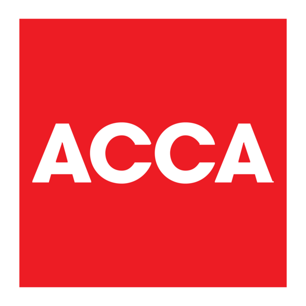
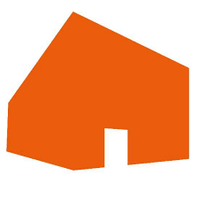

Delivering efficient, well-structured data solutions.
Hello. I'm Thomas, a Data Engineer and SQL Developer currently working with Azure Synapse Analytics, pySpark and database modelling / development. I believe that the best data solutions are driven by collaboration, clear and simple communication, and quantifiable results.
Working as a part of great teams, I have industry experience in Git, Azure Dev Ops, SQL Server, Azure resources (ADLS Gen2, Key vault, etc), and CI/CD, alongside T-SQL and data modeling (Kimball). I'm also Microsoft certified in Azure Fundamentals and Azure Data Fundamentals.
Outside of work, I'm a keen road cyclist, hobby in basic woodworking, and I'm certified in A2 CEFR level Norwegian.
Career experience
- Processing and surfacing data in efficient and performant ways
- Communicating with non-technical business stakeholders about their data and simplifying complex technical concepts
- Data analysis that has assisted decision makers in important choices
- Database administration based around security and reliable data restoration
- Data migration experience at a variety of scales
- Automation that's strongly improved existing business processes
Main technical skills
- Synapse Analytics, pySpark, and sparkSQL
- Azure resources including Key Vault, storage mediums (ADLS Gen2), access control (ACLs and RBAC), and DevOps
- SQL Server and T-SQL
- CI CD through DevOps YAML-based pipelines
- GitHub (pull requests, branching, and constructive peer review)
- Powershell for automation of business tasks
- SQL Server Integration and Reporting Services
Skills
Cloud Technologies
I work daily with Synapse Analytics using Apache Spark, pySpark, Spark SQL, ADLS Gen 2 storage, 3rd party API calls, KeyVault, and Azure-based security.
SQL
Significant experience working with SQL Server's database engine and T-SQL.
Experience in objects including tempdb, indexes, views, stored procedures, and security principles.
CI / CD
I'm familiar with YAML-based continuous integration and deployment pipelines, and promoting changes through environments (development -> UAT -> production).
Source Control
I enjoy using tools such as Git and Azure Dev Ops to collaborate with colleagues and provide constructive peer review and feedback.
ETL / ELT
I have been part of collaborative teams where we have delivered data migrations at different scales, from FTSE 100 companies through to internal nightly data transfer processes for reporting and compliance.
Powershell
I have experience using Microsoft Powershell to automate manual tasks.
This has often been for data transfer or automating Windows operations to improve business processes.
Data Analysis
Power BI, SSRS, and Excel help me to produce meaningful data analysis, visualisations, and reports.
This includes presenting trends and key points that are immediately useful to business stakeholders.
Data Modelling
I have experience using the Kimball analytical method to transform data into semantic models driven by medallion architectures.
Technical Writing
I take pride in writing documentation that presents concepts in an easy-to-understand way.
I aim to deliver key points quickly, but with comprehensive technical detail, in formats including Word and Markdown.
Experience

- Collaborated within a 4-person engineering team to introduce a new semantic business data model (140+ entities), serving data analysts, scientists, and reporting users
- Delivered a three-layer medallion architecture by automating data ingestion, cleansing, and curation using pipelines, pySpark notebooks, calls to external data sources, and serverless SQL views
- Introduced daily, weekly, and monthly ingestion cycles for key business areas, eliminating the need for manual CSV extracts to generate reporting
- Modeled raw data into Kimball dimension / fact tables, transitioning it from an operational to analytical state
- Introduced Power BI dashboards for operational monitoring, providing visibility into data pipeline performance and failure rates
- Worked closely with consultants, third-party software suppliers, and external experts on large-scale projects and to manage service incidents and support tasks
- Analysis and delivery of changes to pension scheme data via complex T-SQL scripting and stored procedures
- Automated the transfer and anonymization of data between databases with PowerShell and YAML pipelines
- Developed bespoke risk transfer reporting for in-house actuaries and external insurance firms
- Data analysis to inform decision-makers involved in the UK government's Pensions Dashboard initiative
- Introduced a reporting data warehouse moving on-premises data to Delta Lake with Synapse Analytics
- Provisioned Cloud resources via CI and CD YAML-based pipelines and Bicep
- Delivery of solutions and collaboration with colleagues via Git and Azure Dev Ops (ADO)
- DBA with responsibility for the Authority's SQL Server and Oracle database estate
- Automation of data transfers with scripted WinSCP
- Delivery of new reporting suite to monitor health of the Council's database estate
- Working with suppliers and third parties to ensure smooth data migrations to Cloud hosts
- Introduction of nightly Oracle RMAN 'hot' backup solution to increase service availability for health and social care colleagues
- Creation of SQL Server corruption checker. Nightly check of 450 SQL databases for new DR strategy
- Maintenance of third party software platforms including Civica Icon and Servitor, NEC's Revenue's and Benefits, NEC Ohms, and Tribal's K2
- Ongoing review of database security, roles, and the release of encryption-at-rest for SQL Server

- Automation of data pipelines (fundraising financials, stewardship communications, and event promotion)
- Creation of bespoke data extracts for fundraisers and campaign organisers
- Monitoring and resolving database performance issues, backup strategy and scheduled maintenance
- Requirements analysis with support staff, colleagues at 26 NHS hospitals, and senior stakeholders
- Processing of requests sent to the Database Service Team's inbox